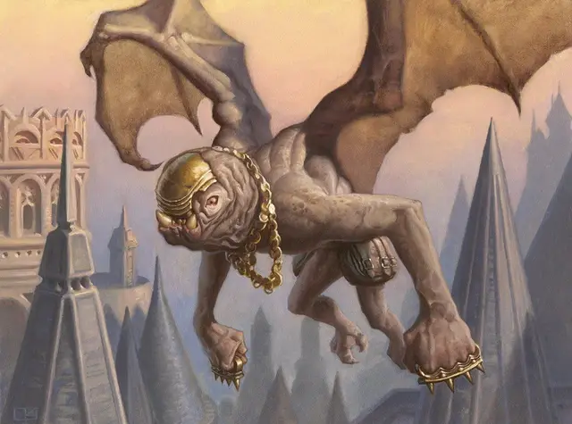

Крылатый трулл
Winged Thrull
Маленький Конструкт, без мировоззрения

Класс Доспеха 12
Хиты 31 (7к6 + 7)
Скорость 30 футов, летая 30 футов
| мод | спас | ||
|---|---|---|---|
| СИЛ | 9 | −1 | −1 |
| ЛОВ | 15 | +2 | +4 |
| ТЕЛ | 12 | +1 | +1 |
| мод | спас | ||
|---|---|---|---|
| ИНТ | 8 | −1 | −1 |
| МДР | 9 | −1 | −1 |
| ХАР | 8 | −1 | −1 |
Иммунитет к урону яд
Иммунитет к состояниям отравление, истощение
Чувства тёмное зрение 60 футов, пассивное Восприятие 9
Языки Понимает Общий, но не говорит
Опасность 1/2 (100 опыта)
Бонус мастерства +2
Действия
Когти. Рукопашная атака оружием: +4 к попаданию, досягаемость 5 футов, одно существо. Попадание: Рубящий урон 7 (2к4 + 2).
Камень. Дальнобойная атака оружием: +4 к попаданию, дистанция 20/60 футов, одно существо. Попадание: Дробящий урон 5 (1к6 + 2).
Реакции
Самопожертвование. Когда по существу в пределах 5 футов от трулла попадают атакой, трулл меняется местами с этим существом и принимает удар за него.
Описание
Крылатые труллы - одновременно самые умные из Орзовских труллов (что само по себе ни о чем не говорит), а также самые маленькие, незаметные и подвижные. Они действуют как посыльные и шпионы для своих хозяев Орзовов и склонны подражать манерам и движениям олигархов, которым они служат.
Труллы
Когда Синдикат Орзовов вырывает душу из ее тела, чтобы создать призрака, оставшиеся останки отправляются к магам плоти, которые используют некромантию, чтобы разжижать труп и превращать его во что-то полезное. Эти творения становятся труллами, послушными рабами, которые служат в самых разнообразных ролях: чернорабочими, посыльными, вьючными животными и даже модными аксессуарами для элиты. Какие бы задачи они ни выполняли, они носят лицевые пластины, выкованные из обесценившихся монет, чтобы скрыть свои ужасные черты лица.
Необычная природа. Труллу не нужен воздух, еда, питье или сон.